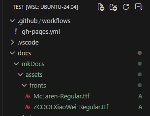

MkDocs Material 字体设置¶
Material for MkDocs 支持快速切换字体，既能用 Google Fonts，也可以自定义字体。
基本用法
普通文本字体设置
在 mkdocs.yml 配置主题字体：
theme:
font:
text: Roboto # 这里填你希望用的 Google Fonts 字体名
主题将自动加载以下权重：300、400、400i、700（覆盖标题、正文、导航等所有区域）
<div style="background: #f1667dff; padding: 10px; border-radius: 8px;">
示例字体：<span style="font-family: 'Roboto', sans-serif; font-size: 18px;">
Roboto 字体效果 ABCD abcd 你好
</span>
</div>
示例字体：
Roboto 字体效果 ABCD abcd 你好
关于字重（weight）：300、400、400i、700
什么是字体自重（weight）？
字体自重是字体的粗细程度，不同数值代表不同粗细或样式。常见如下：
当你设置如
字体自重是字体的粗细程度，不同数值代表不同粗细或样式。常见如下：
- 300 —— Light（细体，纤细优雅）
- 400 —— Regular（常规体，网页默认粗细）
- 400i —— Regular Italic（常规斜体，i 表示 italic，适合引用/术语解释等斜体文本）
- 700 —— Bold（粗体，强调或标题显示）
当你设置如
Roboto 作为字体时，Material for MkDocs 会自动拉取这四种不同自重和样式，页面的不同区域会自动用适合的粗细：
- 正文、普通文字：400 Regular
- 导航栏、次要说明：300 Light
- 标题、强调加粗：700 Bold
- 斜体语句、引用：400i Regular Italic
示例字体效果（点击展开）
Roboto 细体 (300): ABCD abcd 你好
Roboto 常规体 (400): ABCD abcd 你好
Roboto 常规斜体 (400i): ABCD abcd 你好
Roboto 粗体 (700): ABCD abcd 你好
等宽字体（代码区）设置
用于代码块：
theme:
font:
code: Roboto Mono # 代码块区专用 Google Fonts 字体名
代码块自动启用 400 权重
let x = "Hello, 世界！"
自定义与进阶
禁止 Google Fonts 加载，纯用系统字体
适用于隐私或离线部署需求
在 mkdocs.yml 设置：
theme:
font: false # 完全禁用自动字体加载
自定义加载其它字体（自托管/第三方 CDN）
自定义字体方法
第一步：引入所需 Google 字体
在 CSS 文件头部加入：
@import url("https://fonts.googleapis.com/css2?family=McLaren&family=ZCOOL+XiaoWei&display=swap");
第二步：设置字体优先级
/* 让浏览器自动按语言选择字体，McLaren 优先用于英文，ZCOOL XiaoWei 优先用于中文 */
html, body, code {
font-family:
"McLaren", /* 英文字体 */
"ZCOOL XiaoWei", /* 中文字体，适配简体 */
"Microsoft YaHei", /* Windows/Office 常用中文fallback */
sans-serif; /* 通用无衬线备选 */
}
第三步：在 mkdocs.yml 引入自定义样式：
extra_css:
- extra.css
第一步：下载所需字体文件（如从 Google Fonts）
第二步：将字体文件存入项目如下位置

第三步：在 CSS 中声明本地字体
@font-face {
font-family: "McLaren"; /* 自定义英文字体名称 */
src: url("assets/fonts/McLaren-Regular.ttf") format("truetype"); /* 网站根目录起的访问路径 */
font-weight: 400;
font-style: normal;
}
@font-face {
font-family: "ZCOOL XiaoWei"; /* 自定义中文字体名称 */
src: url("assets/fonts/ZCOOLXiaoWei-Regular.ttf") format("truetype");
font-weight: 400;
font-style: normal;
}
:root {
--md-text-font: "McLaren", "ZCOOL XiaoWei";
}
第四步：设置通用字体优先级（推荐放到 extra.css 结尾）
html, body, code {
font-family:
"McLaren",
"ZCOOL XiaoWei",
"Microsoft YaHei",
sans-serif;
}
第五步：在 mkdocs.yml 引入自定义样式：
extra_css:
- extra.css
小结：本地字体方式能保证离线和内网部署字体效果一致。注意发布网站时需将字体文件一并放在对应目录。
官方参考文档
结论：Material for MkDocs 字体设置灵活，无论你要 Google Fonts、系统字体还是自定义托管都可以轻松实现；支持代码区与正文区分开配置，品牌字体也可自定义。